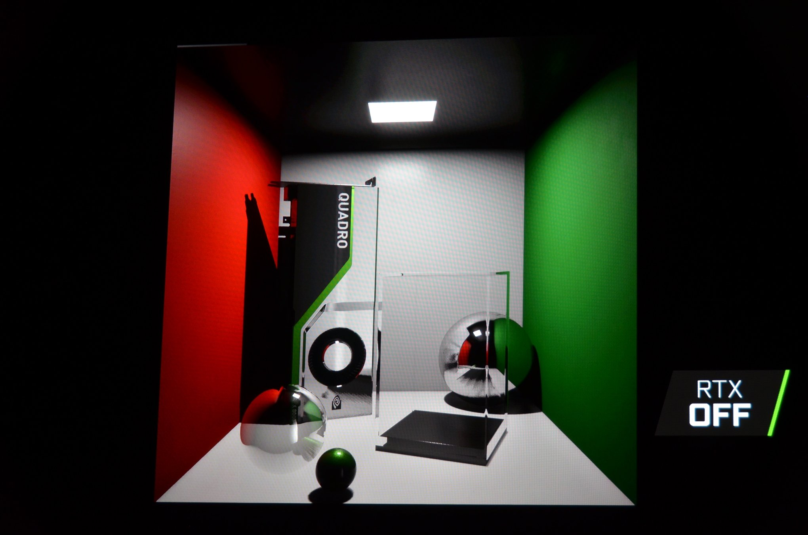
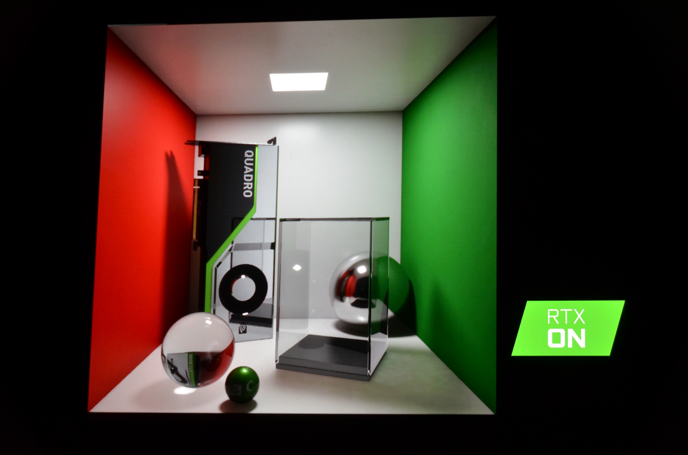
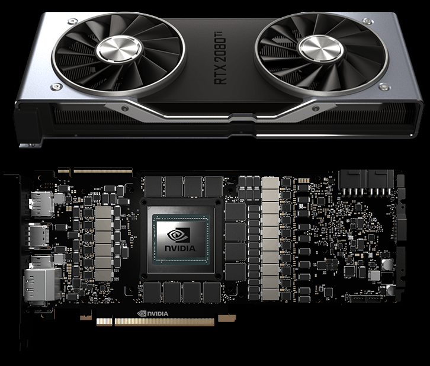
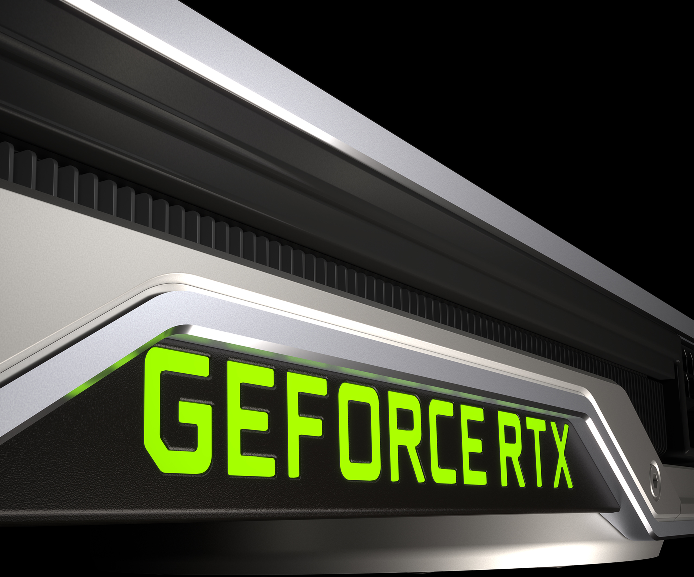
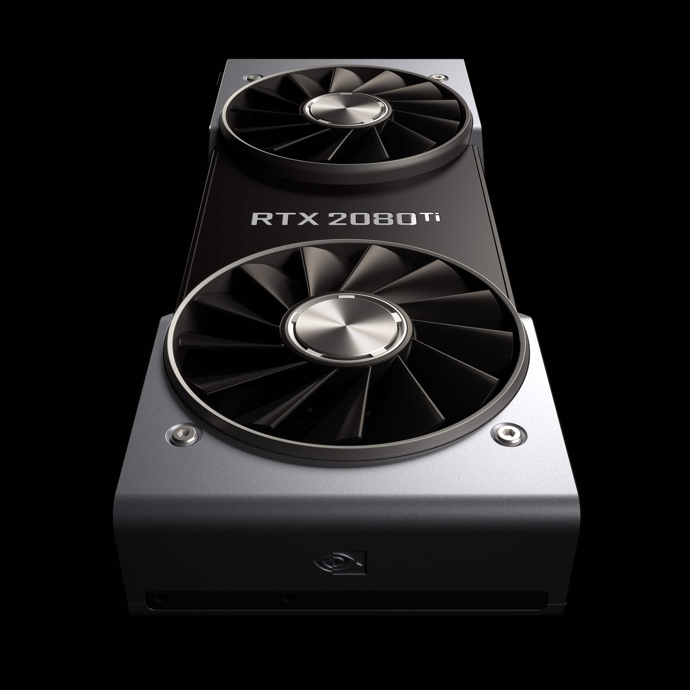
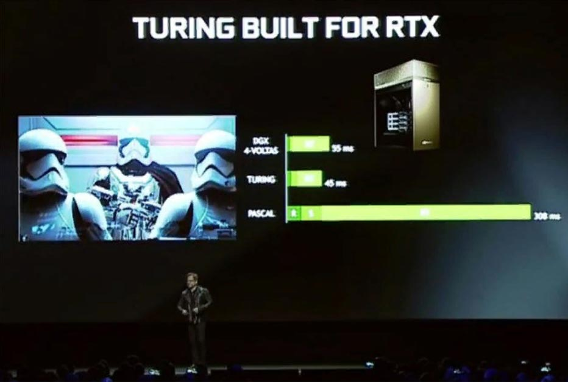
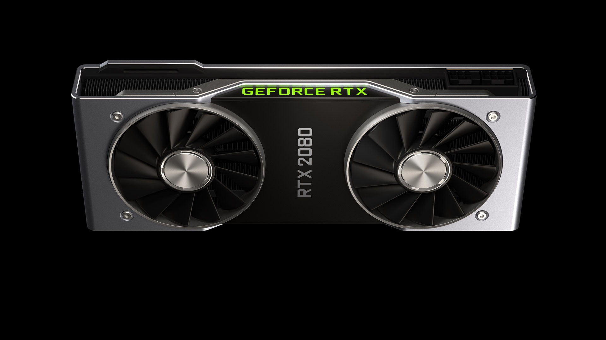
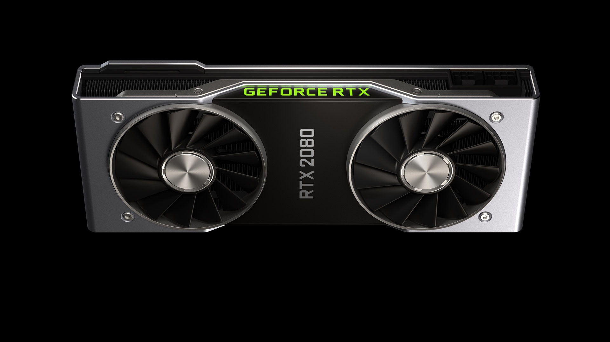
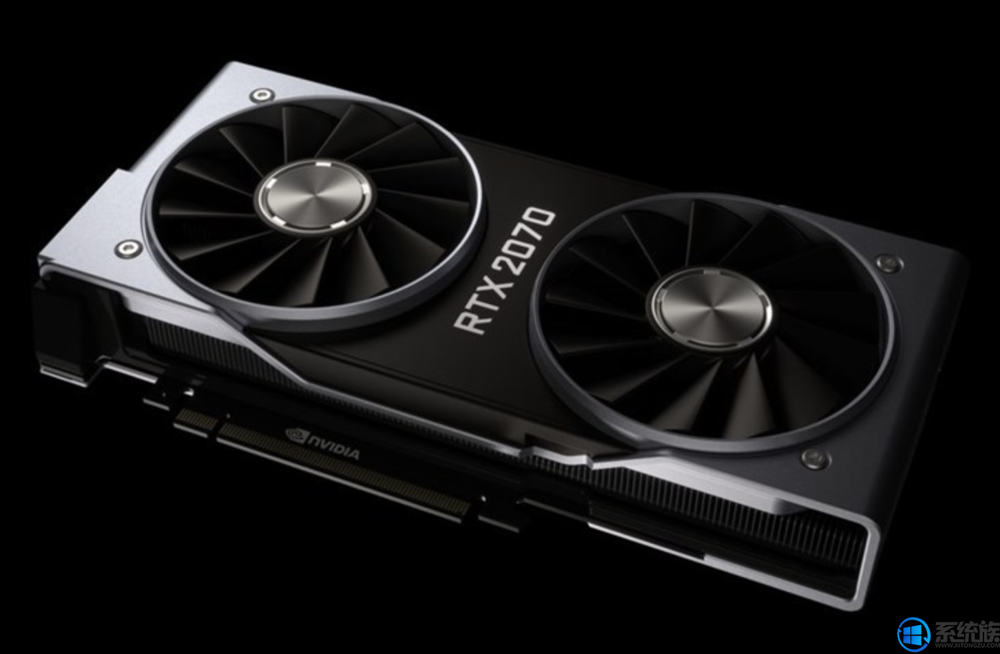
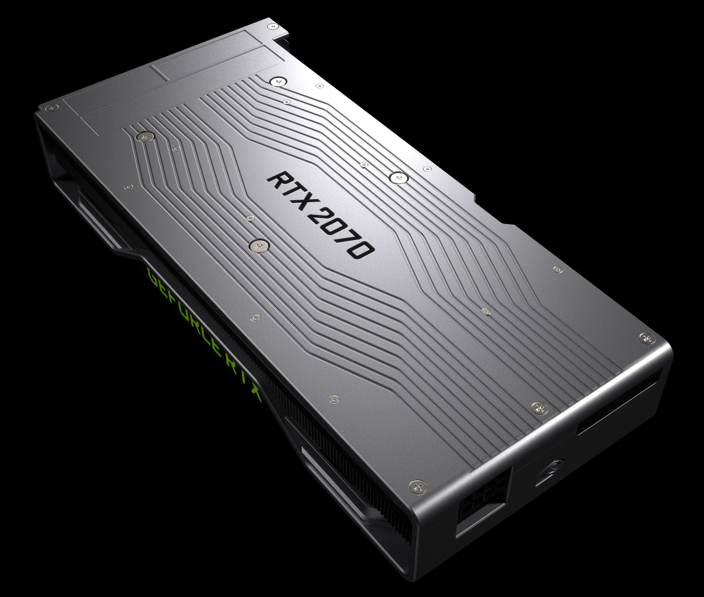

За день до начала Gamescom 2018 — ежегодной международной выставки компьютерных игр, традиционно проходящей в немецком городе Кельн – компания NVIDIA и ее глава Жэнь-Сунь Хуан представили долгожданное новое поколение графических ускорителей. Новая 20-я серия графических карт выступает под индексом RTX. И в этом названии, как оказалось, заключен скрытый смысл, описывающий технологию, поддержка которой в полной мере реализуется в новых картах
Как сообщает официальный сайт NVIDIA, обладая всеми возможностями новой архитектуры GPU NVIDIA Turing и революционной платформы RTX, видеокарты серии RTX 20 объединяют технологии трассировки лучей (ray tracing technology) в реальном времени, искусственного интеллекта и программируемые шейдеры.
Трассировка лучей была доступна и в прошлом. Но на ее создание уходило много ресурсов, а сама технология в основном реализовалась за счет программных инструментов. В новой серии графических видеокарт NVIDIA RTX эта технология выходит на новый уровень, поскольку для ее реализации выделяются отдельные физические блоки, обеспечивающие расчет нужного освещения и эффектов в реальном времени. Для работы с трассировкой лучшей в GPU Turing были добавлены новые специальные ядра NVIDIA RT, которые обеспечивают многократный прирост в скорости расчёта движения лучей. Благодаря этому сцены на экране становятся более естественными. Например, находясь в игре и зайдя в темное помещение вы увидите не просто темное помещение, а помещение, насыщенное полутенями, игрой света, делающей картинку более реальной и живой. Кроме того, технология позволяет создавать реалистичные отражения и искажения источников света.
 С анонсом новых видеокарт NVIDIA решила использовать новую шкалу расчета производительности с помощью технологии трассировки лучей. В ходе презентации Хуан показал несколько примеров работы трассировки лучей, а также новых методов рендеринга с помощью RTX-серии видеокарт на примере динамической сцены, созданной инженерами NVIDIA.
После этого Хуан перешел к демонстрации возможностей новых видеокарт в реальных условиях, то есть в играх. В качестве примера показали новинки, ожидающие релиза: Shadow Of The Tomb Raider, Battlefield V и Metro Exodus.
В первой игре впечатление у собравшейся на презентации аудитории произвели полутени, создаваемые в реальном времени в темных сценах. В Metro Exodus показали, как солнечные лучи реалистично проникают в затемненное помещение. С помощью RTX-технологий рендеринг света происходит гораздо точнее, что позволяет игровым разработчикам использовать это при создании локаций в играх. Например, прятать врагов и объекты, ради которых теперь не нужно освещать все помещение нереалистичным образом.
При демонстрации Battlefield V была показа, пожалуй, наиболее очевидная работа технологии RTX. Отражения от взрывов и огня очень красиво отображались в зеркальных поверхностях рядом расположенных объектов, вроде машин, танков и так далее. При выключенной технологии RTX обработка этих эффектов осуществлялась заметно хуже.
В число представленных видеокарт вошли три новые модели GeForce: RTX 2080 Ti, RTX 2080 и RTX 2070. Все три новинки представлены в обычном варианте и FOUNDERS EDITION. Все три новинки получили новый универсальный референсный дизайн системы охлаждения, использующей теперь два вентилятора.
  Флагманское решение RTX 2080 Ti оснащено 4352 ядрами CUDA, имеет 11 ГБ видеопамяти стандарта GDDR6 с 352-битной шиной и пропускной способностью 616 Гбайт/с. На данный момент, это самое быстрое игровое решение для потребительского рынка. По заявлениям Хуана, ее производительность может быть до 6 раз выше, чем у самого топового решения 10-й серии GeForce. Частота в режиме Boost данной модели составляет 1545 МГц (1635 у FOUNDERS EDITION). Для работы новой видеокарты NVIDIA рекомендует использовать блок питания мощностью 650 Вт. Карта оснащена двумя коннекторами питания 8+8 pin. Базовая версия карты потребляет до 250 Вт. FOUNDERS EDITION – до 260 Вт.
 

Следом идет модель RTX 2080, работающая на Boost-частоте в 1710 МГц (FOUNDERS EDITION – 1800 МГц). Новинка оснащена 2944 ядрами CUDA и будет предлагаться в вариантах с 8 ГБ памяти стандарта GDDR6 (256-бит). Пропускная способность памяти — 448 Гбайт/с. Рекомендуется блок питания мощностью 650 Вт. Базовая версия карты может потреблять до 215 Вт, FOUNDERS EDITION – до 225 Вт. Система питания – 8+6 pin в обоих случаях.
Последней представленную тройку замыкает RTX 2070. Карта предлагает Boost-частоту в 1620 МГц (1710 в версии FOUNDERS EDITION) и оснащена 8 ГБ видеопамяти GDDR6 (256-бит) с максимальной пропускной способностью в 448 Гбайт/с. Для питания карте нужны 175 Вт мощности (185 Вт для FOUNDERS EDITION). Блока питания хватит мощностью 550 Вт.
 Оформить предзаказ на новые GeForce RTX 2080 Ti и RTX 2080 версии FOUNDERS EDITION можно уже сейчас через официальный сайт NVIDIA. Стоимость первой составляет 95 990 рублей. За вторую просят 63 990 рублей. Ожидаемая дата начала поставок новых графических ускорителей в России — 20 сентября 2018 года. Кроме того, на сайте имеется информация о стоимости GeForce RTX 2070 FOUNDERS EDITION. Оформить предзаказ на нее пока нельзя, но зато известна цена – 47 990 рублей. В одни руки выдается не более двух видеокарт.
Обычные карты без приставки FOUNDERS EDITION можно будет приобрести дешевле на целых 100 долларов. Согласно заявленной информации, их цена будет составлять 499 долларов за модель RTX 2070, 699 долларов за модель RTX 2080, а за модель RTX 2080 Ti попросят от 999 долларов.